Бригада №18 (2021-2022)
Тема: Бронювання товарів в мережі магазинів
Лабораторна робота №2
Тема і мета
Тема: КАСКАДНІ ТАБЛИЦІ СТИЛІВ. СЕЛЕКТОРИ .ІДЕНТИФІКАТОРИ. СТИЛЬОВЕ ОФОРМЛЕННЯ ТЕКСТОВИХ ЕЛЕМЕНТІВ В HTML-ДОКУМЕНТАХ
Мета: Придбати практичні навички роботи з селекторами,ідентифікаторами, списками, різноманітними властивостями кольору і фону, зовнішними та внутрішними відступами, плаваючими елементами, оформленням текстових елементів
Посилання на код
Проект доступний за посиланням
Посилання на звітний HTML документЗвіт доступний за посиланням
Оформлення списків
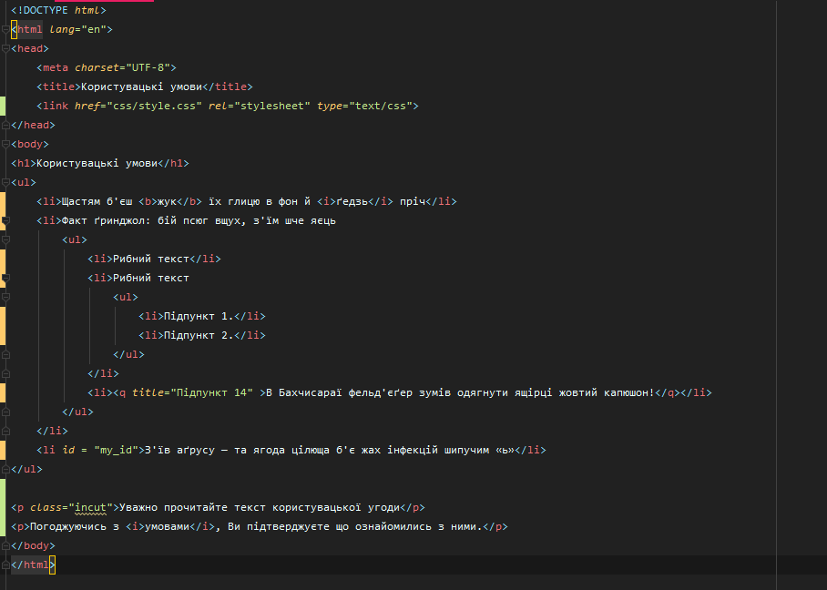 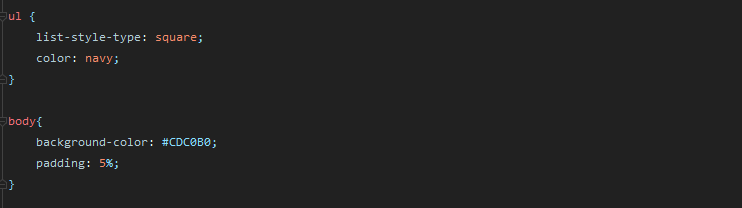 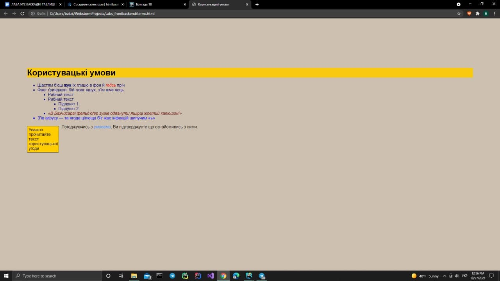
Ідентифікатори
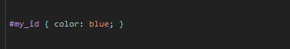
Відступи
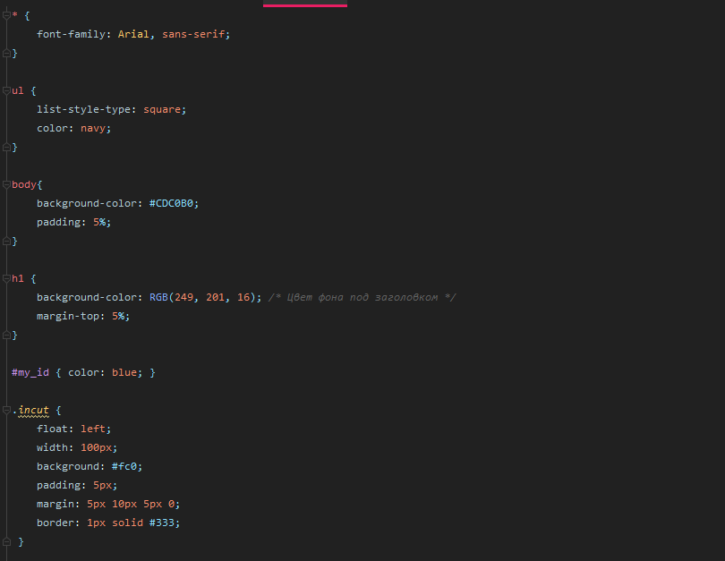
Плаваючі елементи
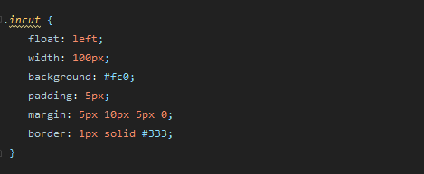
Селектори тегу і класу
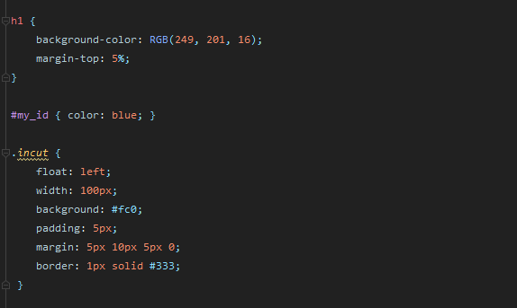
Інші селектори
Сусідні селектори
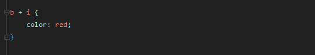
Дочірні селектори
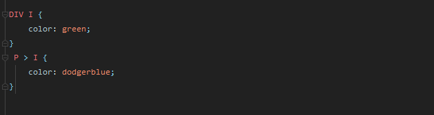
Селектор атрибута
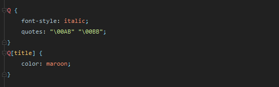
Універсальний селектор
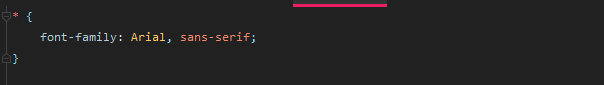
Висновок
У ході виконання лабораторної роботи я придбала практичні навички роботи з селекторами, ідентифікаторами, списками, різноманітними властивостями кольору і фону, зовнішними та внутрішними відступами, плаваючими елементами, оформленням текстових елементів